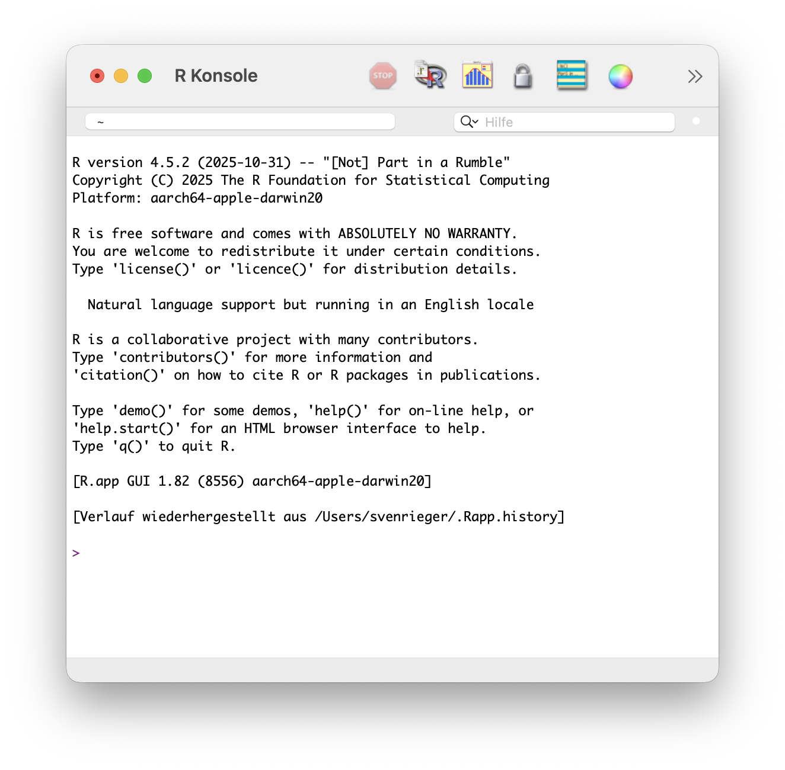
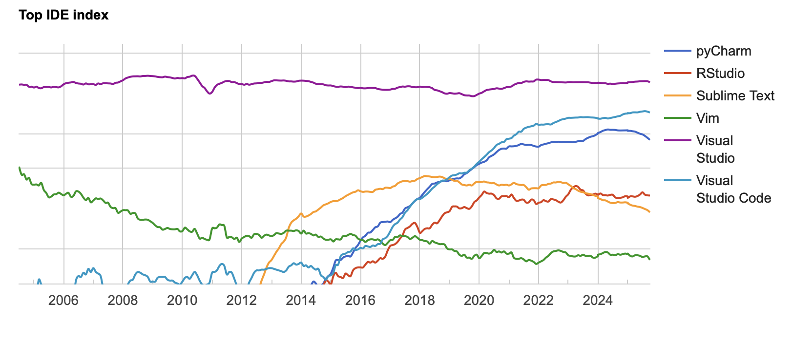
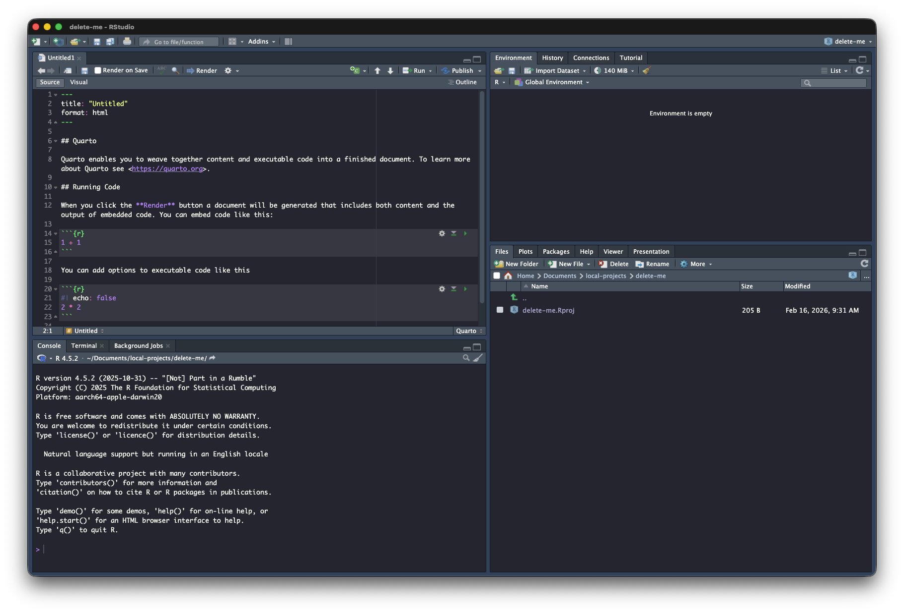
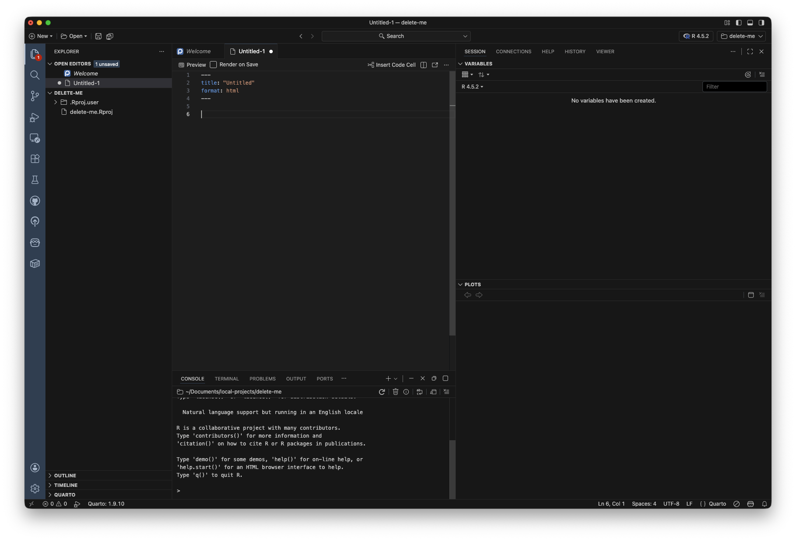

2 Choose an IDE (for R)
2.1 What is an IDE?
An integrated development environment (IDE) is a software application that provides comprehensive facilities for software development. An IDE normally consists of at least a source-code editor, build automation tools, and a debugger. […] (wikipedia)
This means you can acess your programming language (e.g., R, Python, Julia, C++, etc.) through a user-friendly interface and you have your data, code, and output in one place.
2.2 Why use an IDE?
There are many reasons why you should use an IDE. Let’s start by looking at the alternative, which is not using an IDE. Using exclusively the R console without an IDE (or editor) would look like this:

Working directly in the interactive console without a well-structured project environment becomes unorganized very quickly, makes it difficult to keep track of your code when the project grows larger–and most importantly, threatens reproducibility. IDEs instead offer many features that make coding more robust, more efficient, and also reproducible. They often support so-called project-oriented workflows (see the Chapter 6: Setup a project environment), help you navigate between files, and provide features such as syntax highlighting, code completion, AI assistance (e.g., through GitHub Copilot), debugging tools, version control integration (i.e., Git) and much more.
You should never work directly in the Console, except for quick tests. Always use a script (e.g., script.R, script.qmd) so that your work can be understood, reproduced, and reused.
2.3 Some (Popular) IDEs
Popular IDEs are Visual Studio, Visual Studio Code, pyCharm, RStudio, Vim and many others. The following chart shows the popularity (on a logarithmic scale) of different IDEs.

Chart retrieved from https://pypl.github.io/IDE.html on 2025-10-10.
Importantly, there are two main types of IDEs: multi-language IDEs (e.g., Visual Studio Code, Vim, …) and language-specific IDEs (e.g., RStudio for R, PyCharm for Python, …). Although language-specific IDEs can be used for other languages as well, they are usually designed and optimized for one language. Depending on your needs, you might want to use one or the other.
2.4 Popular IDEs for R
The most popular IDE for R is (probably) RStudio, developed by Posit (formerly RStudio, PBC). Recently1, however, Posit released a next-generation IDE named Positron. Positron is a fork2 of Visual Studio Code, tailored to R and Python. This means Positron has all the features of Visual Studio Code including multi-language support, access to the extension marketplace, integrated AI assistant, and more, which makes it a very versatile IDE.
https://posit.co/products/open-source/rstudio/
For a comparison between RStudio and Positron, see https://positron.posit.co/migrate-rstudio-compare.html
Both IDEs help you establish a reproducible workflow by integrating project structure (file management), version control (Git), and literate programming through Quarto for report generation.
So, which IDE will you choose when working with R? 3
In the following section, the layout of both RStudio and Positron is briefly presented. The setup of a reproducible project environment is covered in Chapter 6: Setup a project environment.
2.4.1 RStudio
Install RStudio from https://posit.co/download/rstudio-desktop/.
By default, RStudio opens with four customizable panes4.

The features of the four panes are described in Table 2.1.
|
Source / Script
|
Environment / History / … / Tutorial
|
|
Console
|
Files / Plots / Packages / Help / Viewer
|
2.4.2 Positron
Install Positron from https://positron.posit.co/
Positron has a layout similar to RStudio, but includes an additional vertical activity bar on the left-hand side. This bar depends on the installed extensions and can expand or collapse the primary sidebar. By default, it contains the file explorer, the search function, source control (Git, if installed), the Extension Marketplace, and the AI assistant.

In the middle are the editor and console panels. On the right-hand side, there is the secondary sidebar, where you can access the Session and Connections panes, as well as the Help, History, and Viewer panes.
For more see https://positron.posit.co/layout.html
2.5 Conclusion
Choosing between RStudio and Positron is primarily a matter of personal preference. If you just want to analyze data with R (in a reproducible way), it does not really matter which IDE you choose as both get the job done. As Positron is the newer IDE and is built on top of Visual Studio Code, it has more features and is more versatile. I have switched to Positron and I am very happy with it.
In July 2025, Posit released the first stable version of Positron.↩︎
“In software development, a fork is a codebase that is created by duplicating an existing codebase and, generally, is subsequently modified independently of the original. Software built from a fork initially has identical behavior as software built from the original code, but as the source code is increasingly modified, the resulting software tends to have increasingly different behavior compared to the original.” https://en.wikipedia.org/wiki/Fork_(software_development)↩︎
There is no real right answer, but as I transitioned to Positron, I put it as the correct answer.↩︎
That can be configured via
Tools > Global Options > Pane Layout↩︎